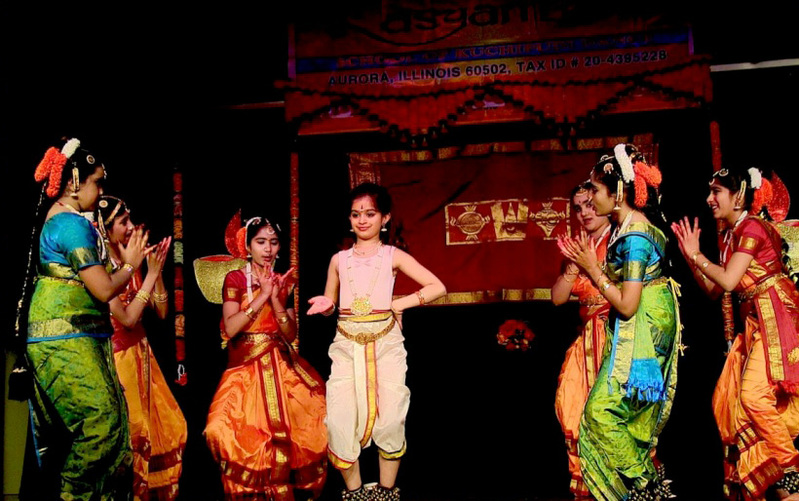
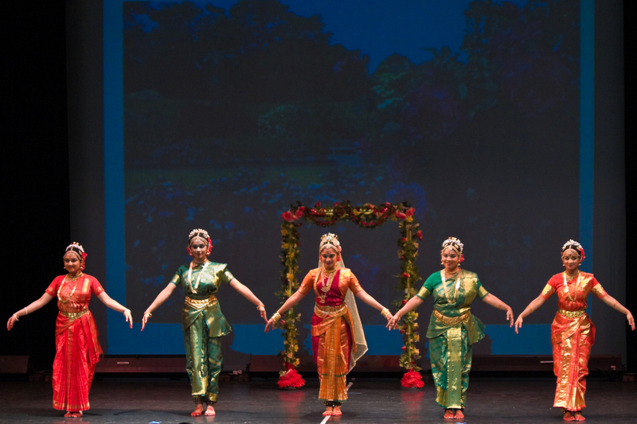

New enrollments are accepted during the first week of every month. In order to enroll, children must
be at least six years old. For more information about the enrollment process and pricing please fill
out your contact information under the "Contact Us" page tab and we will contact you.
For current class schedules and availability, please contact us through our website form or via
email at: lasyam2000@gmail.com & 331-256-5140.
Curriculum
Beginner (Level 1)
This level introduces students to the traditional classical dance technique of Kuchipudi. At this
level,
students are provided with an introduction to theory and practical skills.
Students will learn the following practical skills:
Basic Foot Steps (Adavus)
Advanced Steps, Jathis, and Recitation of Slokas
Hand and Leg gestures
Neck, Eye, Head and Eyebrow movements and coordination

Intermediate (Level 2)
This level is offered to students as an introduction to items. At this level, students will continue
to
learn about Kuchipudi theory and begin learning about its history. Students will be required to
purchase
Kuchipudi theory books. Students will also be encouraged to attend summer workshops to continue
their
practical and theoretical education.
Students will learn the following practical skills:
Puja Nrityam
Sabdham
Jatiswaram
Keerthana
Advanced (Level 3)
This level is offered to introduce advanced dance theory as part of their theoretical education. This
includes the study of Dasvathara, Navagraha, Devatha Mudras’ meaning and usage in dance. Students
will
be introduced to the Tala rhythm system. Students are encouraged to take university level Kuchipudi
certification exams. Coaching for exams will be provided for interested students.
Students will learn the following practical skills:
Taranagams
Kalapams
Thillanas
Seniors (Level 4)
This level is offered to introduce Kuchipudi choreography with an emphasis on Sanskrit lyrics and
literature. At this level, students will gain an understanding of the Natya Sasthram and techniques
of
Abhinayam, Nava Rasas, Nayika Nayaka Bedhas, Asta Vidha Nayikas, and their usage in Kuchipudi. All
senior students are required to attend summer workshops and interested students will be coached for
university level Kuchipudi diploma exams.
Students will learn the following practical skills:
Slokam
Astapadi
Padam
Javali

Solo Debut (Level 5)
Preparing students for their Ranga Pravesam and their earned participation in Lasyam ballets, solo
performances, and all other school dance productions. Their Kuchipudi Ranga Pravesam will culminate
in this graduation performance and a celebration. Special items will be taught upon request.